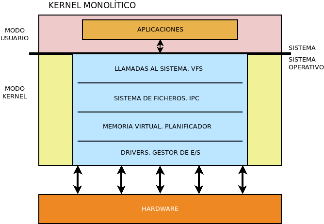
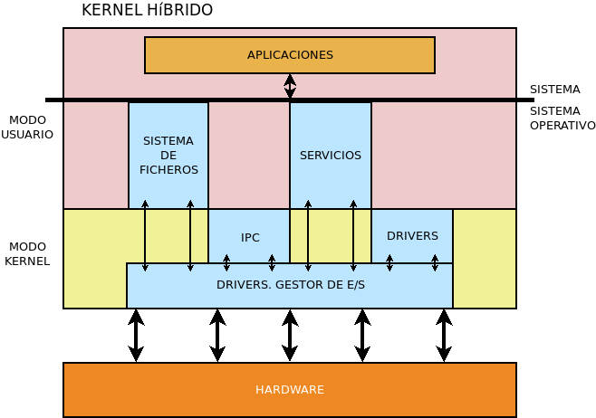

El núcleo o kernel de un sistema operativo está compuesto por diferentes componentes, desde los encargados de interactuar directamente con el hardware hasta los que se comunican con los procesos. Estos componentes pueden ejecutarse en modo kernel o en modo usuario, que es el modo en el que se ejecutan las aplicaciones. Un criterio para clasificar los sistemas operativos es hacerlo dependiendo de cómo se ejecuten las diferentes tareas del sistema operativo.
|
 MonolíticoEl sistema operativo se estructura dentro de un único programa, cada uno de cuyos componentes se ejecuta en modo núcleo. Un sistema diseñado de esta manera es más compacto y menos complejo, lo que a menudo beneficia el rendimiento. Aunque el núcleo es monolítico, puede tener la capacidad de cargar y descargar módulos dinámicamente, aunque el código se ejecutará en modo núcleo. Son sistemas MS-DOS monolíticos, Windows no NT (9X, Me), el clásico MacOS hasta la versión 8, Linux o el UNIX de la familia BSD. |
|
MicrokernelEn los microkernels, la parte ejecutada en modo kernel se reduce a las tareas más básicas de comunicación entre procesos (IPC), gestión de memoria y planificación de procesos. El resto de las funciones del sistema operativo cambian al modo de usuario. Tienen la ventaja de aislar los errores en módulos más pequeños. Los microkernels conocidos son Hurd y Minix. |
|
 HíbridoEs similar al microkernel, pero algunas tareas, aunque separadas del microkernel, se ejecutan en modo kernel y no en modo usuario. Los sistemas híbridos son Windows de la rama NT o el moderno MacOS. |